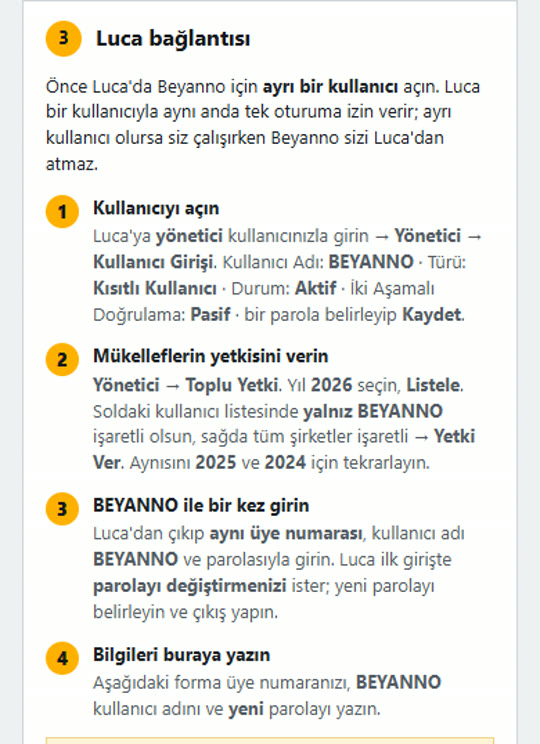
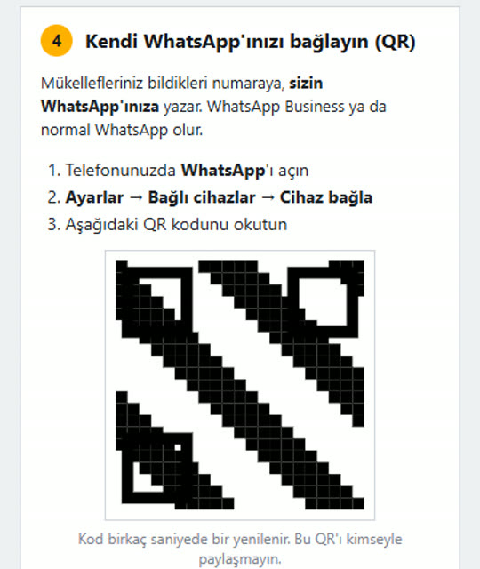
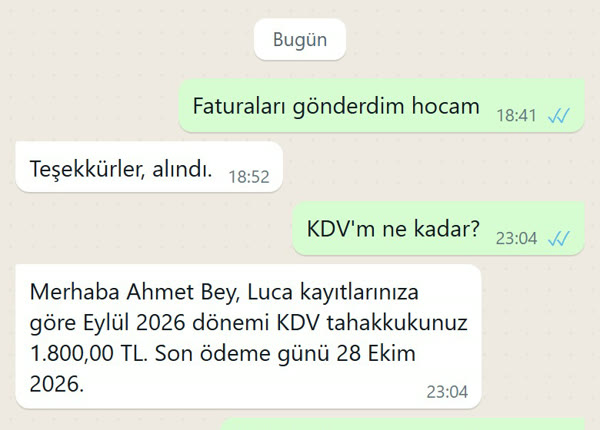
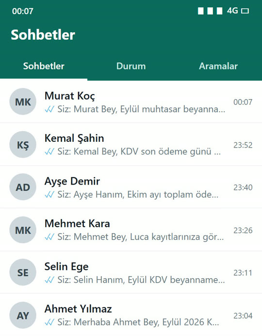

Mali müşavirin WhatsApp asistanı
Mükellefin sorusu gece gelir. Cevabı Luca'daki kayıtta hazır.
Beyanno, mükelleflerinizin WhatsApp'tan sorduğu “KDV'm ne kadar?”, “Beyannamem verildi mi?”, “Son gün ne zaman?” sorularını Luca'daki kayıtlarınıza bakarak otomatik cevaplar. Cevap saniyeler içinde, sizin WhatsApp numaranızdan gider; size iş kalmaz.
Kurulum dört adım. Mükellefiniz yeni numara öğrenmez.
Program yüklemezsiniz. Kurulum telefondan ya da bilgisayardan, tek sayfada yapılır.
Luca'da Beyanno için kısıtlı bir kullanıcı açarsınız
Beyanno Luca'da yalnız okur. Hiçbir kaydı değiştirmez, beyanname onaylamaz, ödeme yapmaz. Ayrı kullanıcı olduğu için siz çalışırken Luca oturumunuz düşmez.
Kurulum sayfasındaki adımlar: Yönetici → Kullanıcı Girişi → Kısıtlı Kullanıcı

Kendi WhatsApp'ınızı QR koduyla bağlarsınız
Mükellefleriniz size her zaman yazdıkları numaraya yazmaya devam eder. Beyanno, Luca'daki telefon kayıtlarından kimin yazdığını bulur; tanımadığı numaraya mükellef bilgisi vermez.

Mükellef yazar, cevap Luca kaydından hazırlanır
Tahakkuk tutarı, son ödeme günü, ödenip ödenmediği, beyannamenin verilip verilmediği doğrudan kayıttan okunur. Kayıtta olmayan rakam yazılmaz; o durumda Beyanno ne bildiğini söyler ve soruyu size iletir.

Cevap otomatik gider, mükellef beklemez
Cevap sizin numaranızdan, gece ya da gündüz saniyeler içinde mükellefe ulaşır. Siz sohbet listenizde yalnız cevaplanmış soruları görürsünüz.
Kendi belirlediğiniz istisnai konular (ör. haciz, yorum gerektiren sorular) size iletilir.

Ekran görüntülerindeki ad ve rakamlar örnektir.
Ne cevaplar, neyi size bırakır?
Beyanno'nun işi tekrar eden soruları almak. Yorum, karar ve imza her zaman sizde kalır.
| Mükellefin kendi kaydı | Bu ayın ve geçen ayın tahakkuk ve KDV tutarı, ödendi mi, beyanname verildi mi, ofise borç. Eylül KDV'm ne kadar, ödendi mi? |
|---|---|
| Son günler | Resmî takvime göre beyan ve ödeme günleri; hafta sonu ve tatile denk gelen günler kaydırılarak. Beyanname son gün hatırlatmaları, belirlediğiniz şablonla. |
| Mevzuat açıklaması | KDV, stopaj, geçici vergi, muhtasar, Bağ-Kur, kira stopajı, e-fatura, gider pusulası gibi konularda örnekli açıklama; cevabın altında kaynağı yazar. |
| Evrak | Vergi levhamı gönderir misiniz?Belge sistemde varsa gönderir, yoksa size görev açar. |
| Randevu ve işlem talepleri | Ne gerektiğini söyler, talebi size görev olarak iletir. |
| Uygunsuz talepler | Sahte fatura, başkasının bilgisi, şifre gibi taleplere kibar ret; size bildirim. |
Yapmadıkları
- Kayıtta olmayan rakamı uydurmaz. Programda görünmeyen bir ay sorulursa başka ayın rakamını vermez.
- Luca'da kayıt değiştirmez, beyanname onaylamaz, ödeme yapmaz.
- Bir mükellefe başka bir mükellefin bilgisini vermez.
- Kesin hukuki görüş vermez; yoruma açık soruları size bırakır.
- Banka bakiyesi, kredi borcu gibi Luca'dan okunmayan bilgileri tahmin etmez; nereden bakılacağını söyler ve size iletir.
İç testten
Ekim 2026'da botu 5.300 farklı mükellef sorusuyla (yazım hatalı, Türkçe karaktersiz, aynı mesajda iki soru dahil) denedik.
Kendi test düzeneğimizdir; örnek mükellef profilleriyle yapılmıştır.
72 saniyede Beyanno
Kurulumdan ilk cevaba kadar tanıtım videosu.
Videodaki ad ve rakamlar örnektir.
Tek paket, açık fiyat
Beyanno WhatsApp paketi. Kurulum ücreti yok.
Aylık
300 TL+ KDV / ay
Her ay yenilenir.
Yıllık peşin
2.988 TL+ KDV / yıl
Aylık 249 TL'ye gelir.
- Kendi WhatsApp numaranızdan mükellef asistanı (QR ile bağlanır)
- Luca bağlantısı: tahakkuk, beyanname, borç sorgusu
- Kaynaklı mevzuat açıklamaları
- Önemli mesajlar ve talepler size iletilir
- Beyanname son gün hatırlatmaları
- Telefon ve bilgisayardan yönetim paneli
Ödeme: havale/EFT ya da kredi kartı (PayTR). Ödeme ve sözleşme onayı kurulum sayfasının içindedir.
Luca: şu an yalnız Luca Mali Müşavir Paketi ile çalışır. Başka program kullanıyorsanız başvuruda yazın; sıraya alalım.
Kalabalık ofisler: mükellef sayınız 100'ün üzerindeyse başvuruda belirtin, size ayrıca dönelim.
Başvuru
Formu doldurun; kurulum bağlantınızı ve kısa bir tanıtımı size gönderelim.
E-posta uygulamanız açılmış olmalı. Açılmadıysa aşağıdaki metni kopyalayıp info@dijitabela.com adresine gönderin.